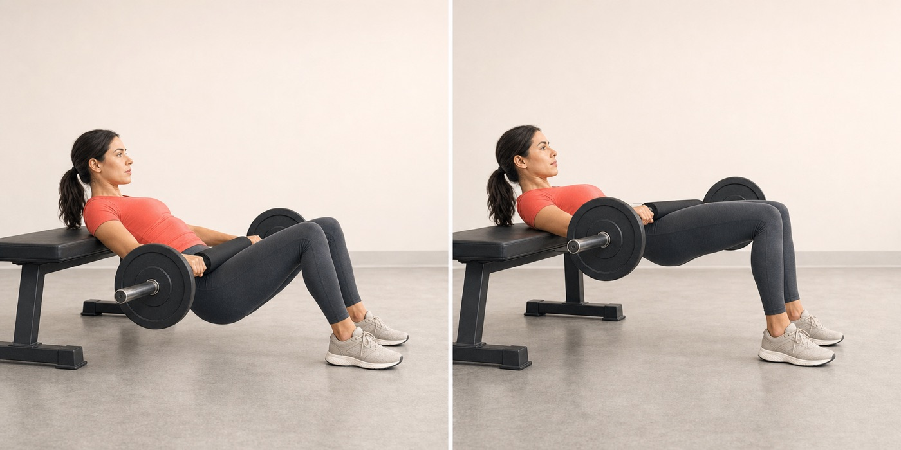

Ягодичный мост со штангой
Главное силовое движение · большая ягодичная
3 × 8–10
отдых 120 с
RIR 2

Ключи техники
- Нижний край лопаток лежит на скамье, подбородок слегка направлен к груди.
- Вверху голени близки к вертикали, стопы полностью прижаты к полу.
- Поднимите таз до прямой линии плечи–таз–колени и сожмите ягодицы.
- Держите ребра «собранными» и опускайтесь подконтрольно.
Частая ошибка
Поднимать таз выше за счет прогиба в пояснице. Верхняя точка — нейтральное разгибание бедра, не мостик спиной.